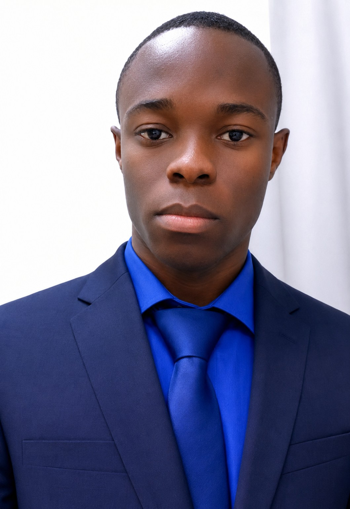

Frontend
HTML, CSS, Tailwind CSS et JavaScript pour créer des interfaces responsives.
Portfolio personnel
Je suis Ariel Yvane Brou, développeur logiciel et étudiant en Génie Logiciel, passionné par la création d'applications web et de solutions numériques.

À propos
Mon parcours est centré sur l'informatique, le développement d'applications et le génie logiciel. J'aime transformer une idée en interface claire, fonctionnelle et agréable à utiliser.
Je travaille notamment avec Laravel, PHP, Blade, Tailwind CSS, JavaScript, MySQL et Git. Je m'intéresse aussi aux API, aux systèmes de paiement, aux tableaux de bord et aux solutions numériques destinées aux écoles et entreprises.
Mon objectif à long terme est de poursuivre mes études jusqu'au doctorat tout en développant des projets concrets et réutilisables.
Compétences
HTML, CSS, Tailwind CSS et JavaScript pour créer des interfaces responsives.
PHP et Laravel pour construire des applications structurées, avec authentification et logique métier.
Conception et utilisation de bases MySQL, gestion de versions et environnement local.
Création de dashboards, parcours utilisateurs, maquettes et interfaces simples et professionnelles.
Projets
Application web
Plateforme de gestion avec inscriptions, formations, paiements, tableaux de bord et rôles utilisateurs.
Fintech / Éducation
Travail autour d'interfaces de paiement, suivi des transactions, comptabilité et contrôle des reversements.
Plateforme
Concept de plateforme de réservation et paiement pour le transport, avec une approche simple et mobile-first.
Base réutilisable
Architecture réutilisable pour accélérer la création de futurs projets tout en conservant une base propre et cohérente.
Formation
CMOGAS — Collège Moderne Oulai Goue Antoine de Sangouine
LYOGAS — Lycée Moderne Oulai Goue Antoine de Sangouine
Année académique 2024–2025
GEIGE — Grande École Informatique et de Gestion d'Entreprise
GitHub-ready
Ce site est 100 % statique : HTML, CSS, JavaScript et assets locaux. Il peut être déployé sur GitHub Pages sans PHP ni base de données.
Contact
Pour un projet, une collaboration ou simplement échanger autour du développement web.
M'écrire un message ↗Remplace l'adresse e-mail dans index.html par ton adresse réelle avant publication.